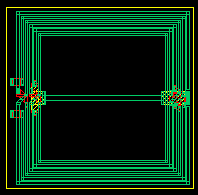
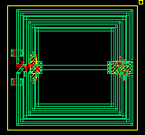
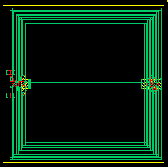

balun xsize and ysize properties
these layouts show the effect of varying the xsize and ysize properites for an example balun
xsize = 200u ysize = 200u

xsize = 150u, ysize = 150u

xsize = 250u, ysize = 250u
